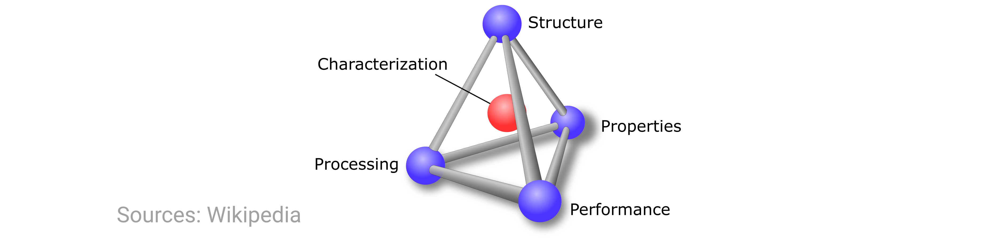
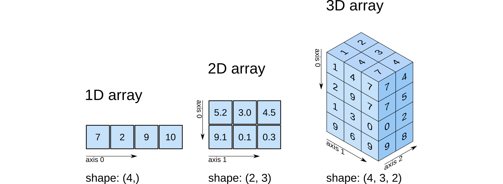
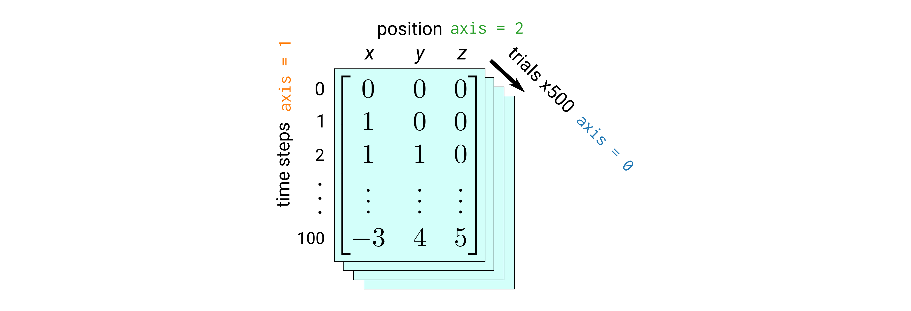

Python: The gory details¶
Authors: Enze Chen and Mark Asta (University of California, Berkeley)
Note
This is an interactive exercise, so you will want to click the and open the notebook in DataHub (or Colab for non-UCB students).
This notebook contains a series of exercises that are intended for people who are new to Python. It does assume some programming familiarity (maybe in another language) so not all computing concepts are discussed; the focus is largely on Python syntax. We start from the basics (ab initio, as some might say 😉) and build our way up to some fundamental concepts in scientific computing. Therefore, we suggest you go through the notebook from top to bottom without skipping around; however, if you find that you already know a lot of this information, feel free to skip to the exercises (Ctrl+F) or check out the other notebook “Python: The greatest hits.” Note: use of Google, Stack Overflow, and your peers/mentors is not only allowed, but encouraged. In other words, don’t be afraid to look stuff up if you’re confused or ask for help when you’re stuck.
There are many, many Python tutorials out there, so we’ve tried to make these exercises as relevant to MSE as possible. We occasionally make references/comparisons to MATLAB, since that is the programming language you used in the previous module.
Contents¶
These exercises are grouped into the following sections:
General Python part 1¶
Expressions¶
One of the simplest things to try in Python is to use it as a “calculator” to evaluate mathematical expressions. This is pretty much identical to the MATLAB command line. We can directly type the expression into a code cell and evaluate it to get a result, such as:
2021
2021
Jupyter notebook cells are quirky in that only the last line of a code cell (if it does not end with a ;) will have its output displayed, if applicable.
If we have multiple lines that we want to display, it’s best to use the built-in print() function like so:
print(2021)
print(2022)
2021
2022
We suggest that, when in doubt, just use print() for all intended output.
We can further perform arithmetic using the following operators:
+for addition-for subtraction*for multiplication/for division**for exponentiation (not^)
3.1415 * 2
6.283
Exercise: compute 2 raised to the power of 3¶
# ------------- WRITE YOUR CODE IN THE SPACE BELOW ---------- #
You’ll notice that the first line in the code cell above started with #.
These are comments in Python, and they do not get executed.
To comment the current line of code that the cursor is on, press Ctrl+/ on your keyboard.
Knowing this, if you want to quickly comment/uncomment multiple lines, highlight them all and press Ctrl+/!
As you might expect, Python obeys order of operations (“PEMDAS”), but just like MATLAB, parentheses do not imply multiplication; you still have to use *.
2 (3 + 4) # this will error!
2 * (3 + 4) # this gives 14
Two more operators that are commonly used in division are:
//for integer division (returns the quotient only, no decimals)%for modulo (returns the remainder from division)
It’s best to just show how they work
print(10 // 3)
print(10 % 3)
print(10 % 5)
3
1
0
Exercise: periodic boundary conditions¶
When performing simulations of materials, we often use periodic boundary conditions (PBCs) to try and minimize boundary / finite size effects that would not be present in a real, bulk material (which is too large to fit into computer memory).
For example, when we have a particle in a molecular dynamics simulation approach one boundary of the simulation box (the green dashed wall on the right side of cell 4 in the following figure), it will eventually “wrap around” to the other side (appear in cell 0) with the same velocity.

Assume that the figure above is the inital configuration and that the two vertical sides have PBCs. The particle travels for 1868 time steps, where for each time step it travels 3 cells. Using the special division operators, please compute:
The number of times the particle goes across the full simulation cell (i.e., has to wrap around).
The number of the cell that the particle finally stops in.
You should get answers of 1120 and 4, respectively.
# ------------- WRITE YOUR CODE IN THE SPACE BELOW ---------- #
Variables¶
Notice that after we execute the above expressions, the value is displayed, but “lost” in the sense that we cannot use it for future computations (without typing the whole expression again). This calls for variables, which are used to store values for future use and to help improve code readability. All Python variables have three components:
A
namethat you assign.A
valuethat is the data it holds.A
typefor the data type.
Typically variables are created using the syntax name = value, where = is the assignment operator that assigns the value on the right-hand side to the variable name on the left-hand side.
For the name, it should be descriptive (explains what it represents) but short. For good style, Python variable names are in snake_case, which means all lowercase and separated_by_underscores. 🐍
Below, we create the year variable and assign it a value of 2021.
Now when we want to print its value, we can reference the variable instead of the numerical expression.
year = 2021
print(year)
2021
Types¶
Now let’s discuss what we mean by “data type.”
This term describes what sort of data the variable contains.
You’ve already seen two data types in the previous examples, namely int (for integer) and float (for decimals).
Python also has a built-in function type() that will return the type of a variable.
For example:
print(type(year)) # notice how we can reference variables and data from previously-run cells!
<class 'int'>
Two more common data types that you will see are string (for text) and bool (for logical True/False).
Strings 🧵¶
Strings in Python are created using single quotes (') or double quotes ("), and you can take your pick, as long as you’re consistent.
Generally it doesn’t matter, except when the text you’re enclosing has a single (or double) quotation mark, in which case you will want to surround your whole string with the other one.
'band gaps' # single quotes on both sides
"1337" # double quotes, just as good. Note how this is still a string!
"That's cool!" # here we have to use double quotes for the string since "That's" has an apostrophe
Just to re-emphasize: Even if the characters in a string are numbers, the whole expression (known as a literal) inside the quotes is still a string.
If we want to change the second line from str to int, we would have to cast the value using the built-in int(...) function.
a = 1337
b = '1337'
print(type(a))
print(type(b))
print(a == b) # this checks for equality; see next section!
print(a == int(b)) # we cast b to int type
print(str(a) == b) # we cast a to str type
<class 'int'>
<class 'str'>
False
True
True
Did you know that you can join two strings together with the + operator?
It’s pretty cool.
Run the next cell to check it out.
first = 'UC Berkeley '
second = 'is the best!'
print(first + second)
UC Berkeley is the best!
There’s also a few more special character literals in Python, where “two characters” are joined together to represent a single construct, such as tabs and newlines.
These literals contain a backslash \.
You might not ever explictly type these characters yourself, but they appear all the time in data files, so you’ll definitely see them a lot in your work.
print('This sentence has a \nline break.') # '\n' is the newline character
print('This sentence has a few ran\t\tdom tabs.') # '\t' is the tab character
This sentence has a
line break.
This sentence has a few ran dom tabs.
f-strings¶
Now we want to show you what is possibly the coolest invention since sliced bread. 🍞
You see that strs are cool, ints are cool, variables are cool—so what if we could combine them all?
Specifically, we will often want to combine numbers and variables into strings inside a print() statement to verify our computations.
As an example, imagine you had a routine that calculated the efficiency of a solar cell.
This routine returns a number, which will say is a float stored inside the efficiency variable.
At the end of this routine, you want to print a final statement for the user:
"The efficiency is XX%."
However, the value of XX% (the value of efficiency) will change depending on the input parameters, and you want seamlessly merge this numeric variable into the string so that, with the same print() statement in Python, you can print the correct efficiency each time, even as the efficiency variable may change in value.
Enter f-strings, short for formatted string literals, that are rather simple and yet incredibly powerful. Whereas normal strings are created with just quotation marks, f-strings have two special additions:
The letter
fimmediately precedes the first quotation mark.Curly braces
{}surround the variable names you want to include.
We’ll demonstrate a few use cases below. Notice how simple it is to combine different data types into a string using this syntax. The resulting f-string even reads like English. How Pythonic!
name = 'Enze'
year = 2
print(f'{name} is in year {year} of his PhD.') # we mixed in str and int
efficiency = 33.7
message = f'The efficiency is {efficiency}%.' # floats too. And it works everywhere strings are used!
print(message)
efficiency = 24
message = f'The efficiency is {efficiency}%.' # we had to reassign the value, but the literal format is the same
print(message)
print(f'The sum of the first 50 positive integers is {50 * 51 // 2}.') # we can even write expressions!
Enze is in year 2 of his PhD.
The efficiency is 33.7%.
The efficiency is 24%.
The sum of the first 50 positive integers is 1275.
Boolean and operators¶
Boolean variables (named after George Boole, who unfortunately died because he was too cool) can be directly assigned a value of True or False, which must be capitalized and written without quotation marks (or else they become strings).
However, a Boolean variable’s value will more often result from a logical operator such as:
>,>=,<,<=for comparing order.==and!=for equality and inequality.and,or,not,is,inkeywords.
Keywords are probably one of the stranger parts of Python.
In other languages, you’re used to writing symbols like && and || to express “and” and “or,” respectively, but because Python strives to be readable, it just directly uses and and or to mean the same thing.
Exercise: materials selection¶
Create a Boolean variable named use that is True when the material is abundant and its refractive index is between 1.5 and 2.0, inclusive.
Print its value as well.
Feel free to change the constants to see if the value of use changes.
abundant = True # bool type; no quotes!
n = 1.7 # float type
# ------------- WRITE YOUR CODE IN THE SPACE BELOW ---------- #
Truthiness⁉¶
It’s perhaps a tautology to say that True means True and False means “False,” so might there also be other ways of expressing the notions of “True” and “False” using other data types?
It turns out there are in Python, and they are as follows:
Data type |
Truthy value |
Falsy value |
|---|---|---|
|
|
|
|
|
any other |
|
|
any other |
|
|
any non-empty |
|
|
any non-empty |
|
|
any non-empty |
The best way to illustrate this idea, which is termed truthiness, is by example:
if 0: # zero int; won't print
print(1)
if 3: # non-zero int; will print
print(2)
if 0.0: # zero float; won't print
print(3)
if 3.14: # non-zero float; will print
print(4)
if '': # empty string; won't print
print(5)
if ' ': # space is not an empty string! Will print
print(6)
if []: # we'll discuss list and dict later!
print(7)
if {}:
print(8)
if None: # whoa!
print(9)
2
4
6
You may have noticed that in line 17 we have a special None keyword.
In Python, None is a data type that doesn’t contain any value and represents the notion of null variable or null object.
Appropriately, it is Falsy.
You can use None to explicitly initialize variables to null values and it is also the return type of a function that doesn’t return anything (more on functions later).
Control flow¶
Now that we’ve covered logic, we can move onto some more exciting content: control flow! These are syntactic structures that modify the execution of your Python code such that it no longer runs linearly from top to bottom. We’ll discuss three control flow structures here that you might find helpful. The first two you should already know from other languages and will rely on them heavily; the third might be new and is helpful to know what it means when you see it.
if/elif/else 🔀¶
These three keywords are used for conditionals, which is when your code has some branching logic that executes differently depending the conditions that are satisfied. Conditionals in Python have the following syntax:
if [Boolean expression]: # note the colon!
# do something if True # note the indentation by four spaces!
elif [another Boolean expression]: # optional; can also have multiple
# do something else if True # same amount of indentation
else: # all other cases
# do something
A few things to point out:
Conditionals end with a colon
:. This is just part of the syntax and is different from MATLAB, but also hopefully more clear.Another strange thing about Python is its reliance on whitespace and indentation. Note that the stuff “inside” each conditional statement is indented (by four spaces) from the beginning.
It must be indented, although you can choose by how much.
This is how Python keeps track of everything underneath the
ifstatement and whatever is not indented begins the next section (in this case,elif).There are no curly braces in Python, which is what you might be used to if you’re coming from Java/C++.
Protip: If you want to indent several lines at once, highlight them all and press Tab. If you want to reduce the indentation (shift them all to the left), highlight them and press Shift+Tab.
Exercise: Band gap classification¶
Arguably one of the most important properties in all of materials science is the band gap, which is a range of energies where no electronic states can exist. The band gap is formed in solids when many atoms are brought together into a close, periodic arrangement such that their orbitals hybridize into continuous energy bands where electrons are allowed to exist (see image in previous link). The lower band is called the valence band (electrons are bound to the atoms) and the upper band is called the conduction band (where electrons can flow to conduct current). The energy gap that separates these two bands (specifically, separating the valence band maximum (VBM) from the conduction band minimum (CBM)) is called the band gap, symbolized \(E_g\). For more information, see Chapters 4.2-4.4 of the Kasap textbook.

Electrons have to overcome this gap in order to become a conducting electron, and so the band gap determines the conductivity of a solid. Some approximate ranges for the band gap energy are:
If \(0 \le E_g \le 0.1\ \text{electronvolts (eV)}\), then the material is a metal (conductor), since electrons can very easily reach the conduction band. Example: copper (0.0 eV).
If \(0.1 < E_g \le\ 4\ \text{eV}\), then the material is a semiconductor. Example: silicon (1.1. eV).
If \(E_g > 4\ \text{eV}\), then the material is an insulator, since electrons will have a very hard time jumping from the valence band into the conduction band. In some (but not all) contexts, these materials are also referred to as dielectrics. Example: diamond (5 eV).
Write a set of conditional statements that print out what type of material you have based on the value of band_gap.
Change the band gap value to test your logic.
band_gap = 1.1 # in units of eV
# ------------- WRITE YOUR CODE IN THE SPACE BELOW ---------- #
for and while loops 🔁¶
The second topic that we will cover is the idea of loops, which is when you want to repeat a chunk of code to automate similar tasks. As you probably know from your previous experience, there are two types of loops:
for loops¶
for loops are used when you know how many times you want to repeat a task.
The syntax is
for i in range(N):
# do something
range(N) is another built-in function that creates a collection of integers (N must be of type int) from 0 to N-1, inclusive.
Therefore, the body of the loop will execute \(N\) times, and each time, the variable i will take on a different value from 0 to N-1.
You can also start at a non-zero integer M if you specify it, such as range(M, N).
Note also that the body of the for loop is indented.
Everything that is indented will be part of the loop, and as soon as the indentation is removed, the remaining code is outside of the loop.
while loops¶
while loops are used when you don’t know how many times you want to repeat a task, but you do know the stopping condition.
The syntax is:
while [Boolean expression]:
# do something
While in general either loop can be used to solve your problem, there is typically one that is a little more “natural” for the particular problem, and recognizing this is mostly a matter of experience, and somewhat a matter of style.
A very common mistake when using while loops is remembering to set a counter, but then forgetting to increment it, which leads to an infinite loop:
i = 1
while i < 10:
print(i) # infinite loop!
# i = i + 1 # this increment needs to be included (not commented out)
Exercise: identify even numbers¶
Write a loop that prints out which positive numbers less than 20 are even.
Identifying parity (even/odd) is a common task in computing and data science.
Hints:
If you want a range of numbers to start from
1instead of0, make sure to addrange(1, N).You may find
if,%, and==helpful.You can print a combination of different values if you separate them with commas, such as:
print(num, 'is even.')
Better yet, use f-strings. 😎
# ------------- WRITE YOUR CODE IN THE SPACE BELOW ---------- #
Keywords associated with loops¶
There are three keywords associated with loops (and a few other things, but mostly loops) that we want to draw your attention to:
pass: This keyword means “do nothing and keep going through the rest of that iteration of the loop.”continue: This keyword means “do nothing and skip to the next iteration of the loop.”break: This keyword means “stop the loop instantly and execute any code following the loop.”
Run the following example to see the keywords in action:
for i in range(20): # defined to print up to 20
if i < 4:
print(100 + i)
pass
elif i < 7: # this will skip 4, 5, 6
continue
print(i)
if i == 10: # loop is killed at 10
break
print('All done.')
100
0
101
1
102
2
103
3
7
8
9
10
All done.
try/except¶
This is a common paradigm that also exists in other languages (in C++ and MATLAB, it’s called try/catch).
Essentially, what this says is “attempt to run the code in the try block, but I know it might fail; so when it does, don’t crash my program and instead jump to the except block and start running the code in there.”
You probably will not have to write any of these structures in this module, but you might see it come up in documentation, so that’s why we’re including it here as a heads up.
Run the following code and see if it matches our explanation.
try:
print('So far, so good!')
np.random.rand()
print('This never runs. sad.')
except:
print('NumPy package not yet imported. rip.')
So far, so good!
NumPy package not yet imported. rip.
Functions¶
Just as variables are excellent at storing data for future, repeated use, functions are great at storing commands for future, repeated use.
We’ve already seen a few examples of built-in functions above: print(), type(), range(N).
From these examples, you should notice that functions are called with their name followed by parentheses.
Inside the parentheses, there may or may not be input arguments.
As we go along, we’ll see more examples of functions that we can call to help us accomplish certain tasks in Python.
Writing your own function¶
Sometimes, the function you need hasn’t yet been written by someone else, so you need to write your own. To define a new function in Python, we use the following syntax:
def function_name(arg1, arg2, ...):
# function body; do something here, such as
return 'Hello, World!'
A couple things to point out:
All function headers start with the keyword
defand a space.Then comes the name of the function, which like variable names, should be descriptive, short, and in snake_case. 🐍
Functions can have zero or more input arguments in parentheses that can then be used in the body of the function.
Function headers end with a colon
:.The function may or may not
returna value. If you want to use the values computed by the caller of the function, you have to include areturnstatement and save the returned value(s) inside variables.
Exercise: band gaps revisited¶
Copy your code for the band gap material classifier in the cell below, and put it inside the body of a function material_type(bg), where bg is the single input argument for the band gap value in eV.
This function then prints out whether that material is a metal, semiconductor, or insulator.
# ------------- WRITE YOUR CODE IN THE SPACE BELOW ---------- #
# --------------------------------------------------------------- #
# test the function
material_type(0) # we don't need to specify the argument name
material_type(bg=9) # but we can if we want to; here's how that's done
res = material_type(1.1) # material_type() should NOT return anything; only prints
print(res) # and so this line will output "None"
---------------------------------------------------------------------------
NameError Traceback (most recent call last)
<ipython-input-19-98b405783cf5> in <module>
3 # --------------------------------------------------------------- #
4 # test the function
----> 5 material_type(0) # we don't need to specify the argument name
6 material_type(bg=9) # but we can if we want to; here's how that's done
7 res = material_type(1.1) # material_type() should NOT return anything; only prints
NameError: name 'material_type' is not defined
Multiple return arguments¶
Just as a function can have multiple input arguments (this we’re pretty familiar with), functions in Python can also have multiple return values, which is similar to MATLAB functions. To write a function with multiple return values, just separate each one with a comma in the function definition.
Then, in the caller, we have to make sure to specify a variable for each return value, also separated with commas.
def get_int_string_bool(fl):
return int(fl), str(fl), bool(fl)
v_int, v_str, v_bool = get_int_string_bool(42.0)
print(f'The {type(v_int)} value is {v_int}.')
print(f'The {type(v_str)} value is {v_str}.')
print(f'The {type(v_bool)} value is {v_bool}.')
The <class 'int'> value is 42.
The <class 'str'> value is 42.0.
The <class 'bool'> value is True.
General Python part 2¶
Whew, believe it or not, the fun is just beginning! 😁 So far we’ve covered variables, data types, control flow, and functions. A natural next question to ask is what should we do if we have several pieces of data? Do we create a variable for each one? Or is there somewhere we can store the collection of data for later access? This means it’s time to discuss data structures, and here we will cover lists (and a little bit more on strings) and dictionaries.
Lists¶
A list is an ordered data structure that stores a sequence of values.
The elements are contained within square brackets [...] and separated by commas ,.
The values in a list can have different types, and they can even be lists themselves.
We’ll start by creating a few lists by hand.
empty = [] # an empty list (no elements)
num = [1, 2, 4, 123] # a list of ints
materials = ['metals', 'semiconductors', 'insulators'] # a list of strings
mixed = [False, 1, 'two', 3.0, [4, 5]] # a list of various data types
print(mixed) # lists are printed as: [elem1, elem2, ...]
[False, 1, 'two', 3.0, [4, 5]]
Exercise: name all the data types/classes of the elements in the list named mixed above¶
Answer: Write your answer here by editing the Markdown cell.
There is yet another handy built-in function, len(), that returns the length of a list (number of elements in the list).
We often use this number to figure out the size of our dataset, set the range() function in a for loop, and perform arithmetic.
Exercise: print the length of the list mixed¶
Before you write the one line of code, we ask you to think about it: Will the length be 5 or 6? Why?
Also, you can directly use mixed below, and it will have the same value as the mixed variable from above (you don’t have to initialize it again).
Variables in code cells, after being executed, will persist and can be used in other code cells.
Nice.
# ------------- WRITE YOUR CODE IN THE SPACE BELOW ---------- #
Accessing list elements¶
We can access the elements of a list by specifying the appropriate index, which must be an int.
In Python, lists (and other data structures) are indexed starting at 0.
This is like most other programming languages, but it notably differs from MATLAB, so beware!
The syntax is as follows:
my_list[ind]
We can also index a list starting from the end if we use a negative index. But we cannot specify an index that is outside the “bounds” of the list. Examples include:
students = ['Alexa', 'Eddie', 'Kevin', 'Luis', 'Mack', 'Megan']
print(f'The first student is {students[0]}.')
print(f'The third student is {students[2]}.')
print(f'The last student is {students[-1]}.')
print(f'The 7th student is {students[6]}.') # error!
The first student is Alexa.
The third student is Kevin.
The last student is Megan.
---------------------------------------------------------------------------
IndexError Traceback (most recent call last)
<ipython-input-23-11e43464fa69> in <module>
3 print(f'The third student is {students[2]}.')
4 print(f'The last student is {students[-1]}.')
----> 5 print(f'The 7th student is {students[6]}.') # error!
IndexError: list index out of range
We can also take slices of a list, which is a subset of elements, using the following syntax:
my_list[start:stop:(every)]
The three input arguments (which are of int type) are:
start: The index to start the slice at. Inclusive.stop: The index to stop the slice at. Exclusive.every: Optional number to specify the frequency of skipping elements. Default is1(don’t skip any).
There are also some sneaky tricks if some of these are omitted, as shown below:
print(students[2:5]) # 3rd, 4th, 5th student; does not include index 5!
print(students[3:]) # all students from the 4th to the end
print(students[:-1]) # everyone except the last student
print(students[0::2]) # skip every other student
print(students[::-1]) # reverse the list!
['Kevin', 'Luis', 'Mack']
['Luis', 'Mack', 'Megan']
['Alexa', 'Eddie', 'Kevin', 'Luis', 'Mack']
['Alexa', 'Kevin', 'Mack']
['Megan', 'Mack', 'Luis', 'Kevin', 'Eddie', 'Alexa']
We can also access the elements of a list using a variant called a for-each loop.
This actually has the exact same syntax as the regular for loop, but instead of the index variable (e.g., i) taking on numerical values in a range (e.g., 0, 1, 2, …), the index variable tracks each value in the list.
The syntax is as follows:
for val in my_list:
# do something with each val
Exercise: write a for-each loop to print out each student’s name¶
# ------------- WRITE YOUR CODE IN THE SPACE BELOW ---------- #
Checking list membership¶
Often times, we’ll have a list of elements that’s so long we can’t really look at every single element manually.
But, we still want to know if our list contains a particular element.
That’s where the in keyword comes in.
We can use this keyword the following way:
elem in my_list # returns True if so, False otherwise
print('Alexa' in students)
print('Enze' in students)
True
False
Lists are mutable, which is a fancy way of saying that we can change their contents after they’ve been initially created.
For example, Luis also goes by “Louie,” so we can change the string at index 3 to be “Louie.”
students[3] = 'Louie' # same syntax to set value at index as get value at index
print(students)
['Alexa', 'Eddie', 'Kevin', 'Louie', 'Mack', 'Megan']
List functions and methods¶
And the fun just doesn’t stop! Lists honestly are probably the most powerful data structures in Python. They have some pretty cool functions and methods associated with them, and we only have time to discuss a few here.
We’ve already seen one function which is len() that returns the number of elements in the list.
Some other handy functions include sum(), max(), and min() if your list has numeric elements.
sorted() is another function that takes your list and returns a sorted list with the same elements in increasing order.
These are all functions that take the list as an input argument.
nums = [4, 2, 6, 3, 7, 8, 9, 1, 5]
print(f'The min and max are {min(nums)} and {max(nums)}, respectively.')
nums = sorted(nums)
print(f'The sorted list is: {nums}')
The min and max are 1 and 9, respectively.
The sorted list is: [1, 2, 3, 4, 5, 6, 7, 8, 9]
But we also mentioned there were cool methods associated with lists.
Methods are essentially the same as functions, but they’re bound to a particular object, which in this case is the list object.
Methods in general are called using the syntax object_name.method_name().
Adding extra elements to the list¶
List methods are commonly used to modify the list.
list.append(obj)is a method that takes in a single argument and appends that object as the next element in the list.This is a very common way to create lists by starting with an empty list
[]and progressively adding new elements into the list.
If you want to insert that object at a different position in the list, you will want to use the
list.insert(ind, obj)function to insertobjat indexind.
ints = []
for i in range(3):
ints.append(i)
print(ints)
for i in range(4, 7):
ints.append(i)
print(ints)
ints.insert(3, '3')
print(ints)
[0]
[0, 1]
[0, 1, 2]
[0, 1, 2, 4]
[0, 1, 2, 4, 5]
[0, 1, 2, 4, 5, 6]
[0, 1, 2, '3', 4, 5, 6]
Removing existing elements from the list¶
You can also remove elements from lists.
The
list.pop(ind)method remove the element at the indexind.If
indis not specified, thenlist.pop()will remove the last element of the list.
The
list.remove(obj)method removes the first occurrence ofobjin the list.This is for when you know the value you want to remove, as opposed to the index you want to remove elements at.
Please see the documentation for more information on list methods.
Two that we did not discuss here that could come in handy are list.index(obj) and list.copy().
Exercise: add “Ryan” to the end of the students list and then remove him. Then add “Enze” at the correct alphabetical position and remove him.¶
# ------------- WRITE YOUR CODE IN THE SPACE BELOW ---------- #
The enumerate() function¶
We’ve kinda deviated from MSE examples, so let’s go back to that. In materials informatics, we’ll be working with large collections of data, which you can now somewhat imagine might be stored in a list! And if we want to access each of these pieces of data, we’ll have to loop through the list.
And now we might hit our first little obstacle: Should we loop through the indices of the list, a la:
for i in range(len(my_list)):
curr = my_list[i]
# do something related to i and curr; but seems clunky
or should we loop through the actual values in the list, a la:
for val in my_list:
# do something with val; index probably not recoverable
First, it’s probably good to pause and convince yourself that the two for loops are doing slightly different things. 🛑
For the most part, you can take your pick; if knowing the index is valuable (e.g., numbering) you can use the former construction, while if it’s only values you care about, you can use the latter.
But, it’s your lucky day, because we can actually do both with the enumerate(list) function!
An example of how this is called (with a list of the first three students) is the following:
for i, name in enumerate(students[:3]):
print(f'Student {i}: {name}')
which would output:
Student 0: Alexa
Student 1: Eddie
Student 2: Kevin
Exercise: given a list of the first ten elements, print the element symbol and atomic number¶
elems = ['H', 'He', 'Li', 'Be', 'B', 'C', 'N', 'O', 'F', 'Ne']
# ------------- WRITE YOUR CODE IN THE SPACE BELOW ---------- #
Creating lists with list comprehension¶
For the final topic on lists, we’ll discuss creating lists, which means we’ve come full-circle from where we started. You’ve already seen a few ways we can create lists:
We can hard-code the list, like
elemsin the previous exercise.We can create an empty list
[]and then add elements to it withlist.append().
Now we will cover yet another Pythonic tool in list creation: The list comprehension.
You can think of it as a compact way of using a for loop to enumerate your list elements.
In a way, this is a little bit like cheating because a list comprehension typically creates a new list from an existing list.
The syntax is as follows:
new_list = [expression for item in old_list]
It looks simple, but don’t be fooled because this is extremely powerful! Here are a few examples:
old_list = [1, 2, 3, 4, 5, 6, 7, 8]
print([x for x in old_list]) # a direct copy of the list
print([i for i in range(1, 9)]) # here's how we could have programmatically initialized it!
print([float(x) for x in old_list]) # each element is cast to float type
print(['ha' for x in old_list]) # 'ha' is created len(old_list) times
print([x for x in old_list if x % 2 == 0]) # we can get real fancy with conditionals; only even nums kept
print([x if x % 2 == 0 else 'odd!' for x in old_list])
[1, 2, 3, 4, 5, 6, 7, 8]
[1, 2, 3, 4, 5, 6, 7, 8]
[1.0, 2.0, 3.0, 4.0, 5.0, 6.0, 7.0, 8.0]
['ha', 'ha', 'ha', 'ha', 'ha', 'ha', 'ha', 'ha']
[2, 4, 6, 8]
['odd!', 2, 'odd!', 4, 'odd!', 6, 'odd!', 8]
Strings revisited¶
Just when you think it can’t get any worsebetter, we’re back with some more strings fun.
We mention that a list is an ordered sequence of objects.
If we think a little bit about strings, we realize that, hey, strings are also ordered sequences [of characters]!
This means that in Python, we can index into strings and slice them to get substrings.
fact = 'Elon Musk pursued a PhD in MSE.'
print(f'The first character is: {fact[0]}')
print(f'The last character is: {fact[-1]}')
print(f'Somewhere in the middle is: {fact[10:23]}.')
print(f'The last four characters are: {fact[-4:]}')
The first character is: E
The last character is: .
Somewhere in the middle is: pursued a PhD.
The last four characters are: MSE.
We can call a for-each loop on the string to iterate through the characters, and call functions/methods on the string. Some common functions/methods that you might use are:
len(str): Gets the length of thestr(number of characters).str.startswith(str2)/str.endswith(str2): Checks ifstrstarts/ends with the string sequencestr2and returns abool. Super useful when reading lines in a file! (more on files later)str.capitalize()/str.upper()/str.lower(): Capitalize/UPPERCASE/lowercase thestr. Good for checking equality while ignoring subtle styling differences.
elem = 'carbon'
print(f'The string has length {len(elem)}.')
print(f'Does "carbon" start with "car?" {elem.startswith("car")}.')
print(f'Does "carbon" end with "car?" {elem.endswith("car")}.')
for c in elem:
print(c)
print(f'The capitalized string is: {elem.capitalize()}')
print(f'"{elem}" matches with "cArBOn" if we convert both to lower: {elem.lower() == "cArBOn".lower()}')
The string has length 6.
Does "carbon" start with "car?" True.
Does "carbon" end with "car?" False.
c
a
r
b
o
n
The capitalized string is: Carbon
"carbon" matches with "cArBOn" if we convert both to lower: True
Here are a few more super helpful string methods when doing data processing:
str.split(delim): Take astrand split it into a list of substrings everytime the stringdelim(short for “delimiter”) is encountered in thestr. The instances ofdelimdon’t appear in the list.If
delimis not specified, thestris split on spaces.
str.join(list): Take alistof strings and join the elements together withstrin between them and return the result.Note where the
strandlistare in this method! It’s a string method, so thestrgoes first.
str.strip(): Removes whitespace and other “invisibles” like newline ('\n'), tabs ('\t') etc. on both sides of the string. Really helpful when working with computational data (and any other data) that has extra whitespace to help make the document human readable, but really annoying for a computer to deal with.
See the Python docs for all the string methods.
date_underscore = '2021_06_28'
date_split = date_underscore.split('_') # split into tokens based on _
print(date_split) # a list!
date_hyphen = '-'.join(date_split) # note the order!
print(date_hyphen) # a new date string!
['2021', '06', '28']
2021-06-28
Wow, who would’ve expected that str and list are so similar?
Unfortunately, there is one big difference between the two, and that is that list is mutable, but str is immutable.
This means that you cannot change the contents of str after it’s been created.
We can join strings together, slice them, and reassign the variables, but each time this will create a new str object in memory.
What we cannot do, for example, is manually change a character in the string to be something else.
Recall that in a list, we are allowed to change the element at a particular index (‘Luis’ to ‘Louie’).
name = 'Enze'
print(name.replace('e', 'o')) # this works! Another helpful string method. But it creates a new string behind the scenes.
name[3] = 'o' # changing the string in-place, however, does not work; raises error
Enzo
---------------------------------------------------------------------------
TypeError Traceback (most recent call last)
<ipython-input-36-7ebb170ace85> in <module>
1 name = 'Enze'
2 print(name.replace('e', 'o')) # this works! Another helpful string method. But it creates a new string behind the scenes.
----> 3 name[3] = 'o' # changing the string in-place, however, does not work; raises error
TypeError: 'str' object does not support item assignment
Exercise: string vs. list¶
A conceptual question: Identify one way string and list are similar in Python and one way they’re different.
Write your answer here by editing this Markdown cell.
Answer: Write your answer here by editing the Markdown cell.
Exercise: parsing strings¶
Often times when working with data, files, etc., we have to take slices of strings (substrings), split them, join them, etc. This can be to extract the name of a compound, a date, an experimental parameter, etc. Since we have a lot of data, we would like to come up with a robust algorithm that can flexibly handle a variety of inputs (assuming that some overall structure is maintained—not always a safe assumption in the wild!).
Your colleague gives you a list of files with absorption data and asks you to extract the chemical formulas from the file path and store them into a list.
The files are stored in different nested folders, but the filename is always [formula]_[date].txt.
They would also like to have the collection date stored in the format MM-DD-YY with hyphens instead of the default underscores generated by the program.
The data input list of files is provided below, and your job is to create two lists that look like:
formulas = ['Si', 'GaAs', 'InP', 'AlGaAs']
dates = ['06-28-21', '06-28-21', '06-29-21', '06-30-21']
Hints:
You might want to apply
str.split(),str.join(), and indexing/slicing.We recommend thinking through all the steps required to solve this problem before jumping into the code. Write some comments (or pseudocode) to help guide your computational thinking process.
We also recommend solving this problem iteratively, doing one string operation at a time and verifying that step works.
In particular, this problem calls for a
forloop, but focus on just getting the first file name processed.
data = ['path/to/absorption/data/Si_06_28_21.txt',
'path/to/absorption/data/GaAs_06_28_21.txt',
'different/path/to/absorption/data/InP_06_29_21.txt',
'path/to/more/absorption/data/AlGaAs_06_30_21.txt']
# ------------- WRITE YOUR CODE IN THE SPACE BELOW ---------- #
Exercise: functions and lists¶
Now we’ll go through another exercise with lists, this time by writing your own helper function.
Mark gives you some data on band gaps, but his evil twin Kram changed the values from float to string.
This makes it difficult to work with (try running the code below).
Write a helper function that takes the list of strings as input and returns a list of corresponding floats. Also return the minimum and maximum values in the list. Finally, call the function on the band gap data to ensure it works as expected. Your final returned result should be similar to:
([1.14, 1.43, 0.67, 5.5, 3.4, 0.37, 0.0001, 10.0], 0.0001, 10.0)
band_gaps = ['1.14', '1.43', '0.67', '5.5', '3.4', '0.37', '1e-4', '1e1']
print(f'The maximum band gap value in the original list is {max(band_gaps)} eV') # ???
# ------------- WRITE YOUR CODE IN THE SPACE BELOW ---------- #
The maximum band gap value in the original list is 5.5 eV
Dictionaries¶
Lists are nice when we want to organize our data and access them later using an index. But there are times when we want to have a different data access pattern. For example, if we wanted to get chemical data on the elements, we’re never really going to say, “Oh I want to access the fifth property of the third element;” but rather, “What is the atomic mass of lithium?”
This calls for a new data structure!
Dictionary (dict class) is a data structure that contains a collection of key:value pairs.
It is, just like a dictionary, a mapping between a particular key (like a word) to its associated value (like a definition).
They are created using curly braces {} and the entries are comma-separated tokens of key:value pairs separated by colons.
Examples include:
empty = {} # the empty dictionary
schools = {'UC Berkeley':1, 'UCLA':2, 'Stanford':2}
band_gaps = {'copper':0, 'silicon':1.1, 'diamond':5.0}
props = {'lithium':{'number':3, 'mass':6.941, 'group':'alkali metal'}} # nested dictionary with many types!
Access entries¶
To access individual entries of the dictionary, use the syntax
my_dict[key]
to get the value associated with the key.
Just like with lists, the syntax is the same for getting the value and for setting the value (dicts, like lists, are mutable).
Adding new entries¶
To add an entry to a dictionary, we specify a new key:value pair:
band_gaps['germanium'] = 0.67 # new entry!
band_gaps['copper'] = 0.0 # this overrides the old entry!
print(band_gaps)
{'copper': 0.0, 'silicon': 1.1, 'diamond': 5.0, 'germanium': 0.67}
A few notes on dictionaries in Python:
The keys of a dictionary must be unique. Otherwise you can imagine how confusing it is for two keys to map to different values. Multiple keys can have the same value though.
What can the
keybe? The key can be any type that is immutable.What can the
valuebe? Essentially unrestricted—they can even be other dictionaries!We stressed with
lists how they have the nice property of being ordered.dicts in Python, for the most part, are not ordered. So there’s no real sense of “the first entry” or “the second-to-last entry” in the dictionary. If this is the case, how do we programmatically access what’s in the dictionary? for-each loops!
Loop through the dictionary with for-each loops¶
# loop through the entries themselves
for item in band_gaps.items():
print(f'{item[0]} has a band gap of {item[1]} eV.') # access the key:value tokens using indices
print()
# same as before, but we store the two returned tokens (key, value) separately! hehe
# this is LIKELY the pattern you will use in 90% of use cases
for elem, val in band_gaps.items():
print(f'{elem} has a band gap of {val} eV.')
print()
# loop through the dictionary keys only
# for key in band_gaps: # this works...
for key in band_gaps.keys(): # but this second way might be nicer because it's explicit
print(key)
print()
# loop through the dictionary values only
for val in band_gaps.values():
print(val)
copper has a band gap of 0.0 eV.
silicon has a band gap of 1.1 eV.
diamond has a band gap of 5.0 eV.
germanium has a band gap of 0.67 eV.
copper has a band gap of 0.0 eV.
silicon has a band gap of 1.1 eV.
diamond has a band gap of 5.0 eV.
germanium has a band gap of 0.67 eV.
copper
silicon
diamond
germanium
0.0
1.1
5.0
0.67
Exercise: manually initiatize a dictionary mapping the first six elements (symbol as a str) to their atomic number (as an int). Then print each key:value pair of the dictionary on its own line (don’t just print the whole dictionary)¶
# ------------- WRITE YOUR CODE IN THE SPACE BELOW ---------- #
Working with files¶
As alluded to previously, most of the time, our data will be stored in external files rather than hard coded like the previous examples, so we must be proficient in working with files. On Tuesday, we’ll be going through several examples with different file formats that are commonly used in MI, but here we will discuss the common paradigm when working with text-based files. Our goal here will be to read-in and process text files using Python.
As we mentioned in the introduction, one of the biggest challenges in MI is data representation, and working with text files is no different.
How do we represent the data in text files?
Well, since the data inside the files (i.e., each line) are text, we already know how to encode that: as a string!
And if we treat each line as a string, and think of the entire file as an ordered collection of lines, we already know how to encode that too: in a list!
Maybe we can represent the file in Python as a list of strs.
And so with a little bit of thinking, we are able to solve this abstract problem of “storing files in Python” using concrete concepts we already know.
A small digression…¶
In fact, when you’re working on future problems in this module and beyond, you’ll have to do this a lot: converting between scientific/real-world concepts and the logic/structure in code. We understand this is really challenging and daunting at first, so we offer the following sequence of steps that you might find helpful.
Forget about the code. 😂 What is the problem at hand, and what is the goal? Always focus on the goal. 😤
What sequence of steps will get me to the goal? Will programming even help?
Alright, so now this raises the question of when might we use a programmatic approach?
Generally if you have a large sequence of repetitive steps that you want to automate, that’s a good sign.
Particularly if the sequence of steps is reusable for later tasks. This smells like a function.
If you have a sequence of steps that you want to ensure reproducibility, that’s also a good sign.
For other reasons, see our “Pros and Cons” brainstorming exercise. 🙂
If you decide that a programmatic approach is what you need, you can try the following:
First, take a deep breath. A programmatic solution is hard because it’s new and not the way we typically think; it’s the way computers think. You will find that, in our opinion, the actual code that you end up writing is not too difficult; at least relative to the amount of brainstorming/planning that goes into the solution.
Like in the previous section, relate parts of the problem to the programmatic concepts you already know. Some good heuristics in this regard are thinking through the data types (Text? Try strings. Numbers? Try floats), data structures (Ordered sequence? Try a list. Lookup table? Try a dictionary.), and control flow (Branching logic? Try if/else. Repetitive logic? Try loops) involved.
Reframe the original scientific problem as a programming problem.
Plan out a sequence of steps (on paper, or as comments in the code) as an initial solution. No code.
Finally, code it up. 😎
OK back to the problem!¶
Applying the previous steps to our current problem, we see that we should now be tackling the problem: “How do I turn the file contents into a list of strings?” If we can do this, then we can use what we know about lists and strings to “read” the file.
As you might expect, there are many ways to read files in Python, and it all starts with opening the file. Like a book, you can’t read a file if you don’t open it. The best way (safest, cleanest, recommended) to open files in Python is with the following syntax:
with open('path/to/file.txt', 'r') as f:
# do something with file object f
Let’s break this down:
withis a handy keyword in Python that, among other things, ensures that our file is safely closed after we’re done with it.open()is the built-in function to open a file.'path/to/file.txt'is a string that represents the location of the file..txtis the extension of text files. Your file may have a different extension.
'r'is a string that means “read the file.” Later we’ll see that'w'writes to a file.asis another keyword for assiging aliases.fis a variable for the file object that now represents our file in the computer memory.Note that like
ifstatements andforloops, the body for our file processing code is indented!
OK! We’re one step closer to our goal, because now we’ve loaded the file into memory.
But note that f is the file, not necessarily its contents (grr…), so we offer two solutions for accessing the contents of f.
Method 1: Load all lines into memory as a list of strings¶
with open('path/to/file.txt', 'r') as f:
lines = f.readlines()
# do something with lines, such as a for loop through them
Method 2: Read the lines of the file one at a time¶
with open('path/to/file.txt', 'r') as f:
for i, line in enumerate(f):
# do something with each line, such as print it
Method 1 works pretty well (it’s exactly what we said we needed, haha), and we end up with a list that we can manipulate as we wish. One of the more significant drawbacks of this method is that it can be incredibly memory intensive if our file is very large. In Module 3, you will see files (from DFT) that are very large with hundreds of thousands of lines. 😅
Method 2 is efficient and we can process each line as we go. One of the more significant drawbacks of this method is that we can’t go back to a previous line once we’re finished with it. We would have to re-open and re-read the file.
Exercise: reading files¶
Using either of the previous methods, open the file mentors.txt (full relative path given below), read in the contents, and print out each line.
In your DataHub, find the original file and open it up to compare the contents with what’s printed below.
Does anything surprise you?
filepath = '../../assets/data/week_1/01/mentors.txt'
# ------------- WRITE YOUR CODE IN THE SPACE BELOW ---------- #
You should notice that there is an extra blank line between each entry in the printout that is not present in the original mentors.txt file.
This is extremely subtle because when Python reads in files, it also reads the newline character ('\n') at the end of each line; however, the print() function also adds '\n' at the end of each printout, which is why you see an extra blank line.
Exercise: add a single method from the str class to the above code to eliminate the blank line by stripping away the \n character from each line in the file¶
Writing files¶
Writing files (such as strings stored in a list) has a similar syntax to reading files, but we change r to w.
with open('path/to/file.txt', 'w') as f:
# write some stuff to f
To write text to a file, we can use the method f.write(string).
This writes string into an open file represented by the object f.
Note that a newline is not automatically created between each write(), so we have to remember to add '\n' to the end of each string, or else each call to write() will put the strings on the same line!
After you run the following code, you can open up the mentors2.txt file and marvel at your work!
For more information on input/output (I/O) in Python, see the documentation.
inst = ['Sinead', 'Ryan', 'Mark', 'Enze']
with open('../../assets/data/week_1/01/mentors2.txt', 'w') as f:
for ix in inst:
ix += '\n' # add the newline character!
f.write(ix) # write the name to the file
Materials structure¶
First, we’ll discuss a little bit about the science to provide context and motivation. In MSE, we are often concerned with the characteristics of and relationships between four central tenets: processing, structure, properties, and performance (PSPP). As all of these points heavily influence each other, their relationship (and thus, the whole endeavor of MSE) is typically summarized by the following schematic from Wikipedia:

In this exercise, we’re focusing on the structure component of the above tetrahedron. But note that when we talk about “materials structure,” there are actually many possible length scales on which we can describe the structure.

In this problem, we’re looking at the ground-state crystal structure of the elements, which is on the far-left end of the above scale. Here the length scales are typically on the order of Angstroms, or \(10^{-10}\) meters. Moreover, the crystal structures of all crystalline materials can be classified into 14 different Bravais lattices that can be further grouped into six crystal families, as shown here:

The crystal structure (lattice + basis) determines the symmetries of the system and has considerable influence on the physical, mechanical, optoelectronic, and magnetic properties of the material. Later this week, we’ll see how we can encode and leverage this structural information to aid our data analysis.
Exercise: Reading files¶
We’ve included a file element_structure.txt that contains information on the crystal family of the first 50 elements in the periodic table.
The first few lines of the file look like:
# Data from https://periodictable.com/Properties/A/CrystalStructure.html
Hydrogen Hexagonal
Helium Cubic
Lithium Cubic
Beryllium Hexagonal
where there’s a comment in the first line and the subsequent lines are the element and family separated by a single space. In this first example, read in the file and print out the first ten elements along with their atomic number. You should not have to rely on other packages, just native Python. Your output should look something like this (leading zeros are bonus points!):
01 Hydrogen
02 Helium
...
10 Neon
Hint: You might want to use
enumerate()to read each line.str.startswith()andcontinueto skip lines you don’t want to read.str.split()to extract the necessary information.breakto stop the loop early.
crystal_data = '../../assets/data/week_1/01/element_structure.txt'
# ------------- WRITE YOUR CODE IN THE SPACE BELOW ---------- #
Exercise: creating a dictionary¶
Using the same file as the previous exercise, read in the data from the file and store them into a dictionary where the key:value pairs are element:family.
The first few entries of the dictionary will look similar to (order might be different; that’s OK):
{'Hydrogen': 'Hexagonal',
'Helium': 'Cubic',
'Lithium': 'Cubic',
'Beryllium': 'Hexagonal',
...
Dictionaries are nice because they serve as quick lookup tables when we want to find associated values. For those who have learned a bit about algorithmic efficiency, you might be interested to know that a Python dictionary has constant lookup time, whether that dictionary has ten or ten million entries!
crystal_data = '../../assets/data/week_1/01/element_structure.txt'
# ------------- WRITE YOUR CODE IN THE SPACE BELOW ---------- #
Exercise: inverting the dictionary¶
Now take that dictionary you created in the previous exercise and “invert” it. By this, we mean turn the values into keys and keys into values (still corresponding). Doing this allows us to, for example, find all elements that have a similar crystal structure, if we’re only searching for materials with that structure.
Notice that because keys have to be unique in a dictionary, the same crystal family (e.g., Cubic) will correspond to multiple elements (e.g., Helium, Lithium, Neon).
Therefore, the value corresponding to each key in the inverted dictionary should be a list of all the elements belonging to that family.
Your code takes the previous dictionary as input and returns another dictionary that will look similar to (order of keys and values doesn’t matter):
{'Hexagonal': ['Hydrogen', 'Beryllium', 'Carbon', ...],
'Cubic': ['Helium', 'Lithium', 'Neon', ...],
'Trigonal': ['Boron', 'Arsenic'],
'Monoclinic': ['Oxygen', 'Fluorine', 'Selenium'],
'Triclinic': ['Phosphorus'],
'Orthorhombic': ['Sulfur', 'Chlorine', 'Gallium', 'Bromine'],
'Tetragonal': ['Indium', 'Tin']
}
Hint: You might have to check to see if a value from the original dictionary (i.e. crystal family) current exists as a key in your new dictionary.
This is a tricky problem, so take it slow and don’t give up!
# ------------- WRITE YOUR CODE IN THE SPACE BELOW ---------- #
The NumPy package¶
So far, everything that we’ve done is with native Python; in other words, the functions and data that come with the default Python installation. However, one of the advantages of Python is its extensibility, which comes in the form of various packages (i.e., libraries) that allow you to do more with Python. A default Python installation comes with a few extra packages installed, while others you have to install on your own.
In all cases, before you can use the functions inside a package, you have to import it like the following example:
import os # this package allows your code to interface with your operating system
print(os.getcwd()) # this is a function from the os package. We include the package namespace
C:\Users\Enze\Documents\GitHub\mi-book\week_1\01
You’ll notice that in the above example, we had to type os.function_name() to use any function from the os package.
This will be true for all packages.
However, if the specific function is one that we use frequently, we can directly import it too, using:
from package import function_1_name, function_2_name, ...
from os import getcwd
print(getcwd()) # now we don't need the "os." prefix
C:\Users\Enze\Documents\GitHub\mi-book\week_1\01
Import NumPy¶
In this last section, we’ll be using the NumPy package to do scientific computing in Python. It is absolutely critical that you are comfortable using NumPy and its associated arrays, modules, and functions because all scientific computing applications and modules rely on this framework. It’s now so popular that the developers even published a review article on NumPy last year in Nature, one of the top journals in science.
To import the NumPy package, it is best practice to actually give it an alias. These are abbreviations that typically allow you to reference the package with fewer characters, resulting in cleaner code if you have to call the package a lot, which is typically the case with NumPy. The syntax for an alias is:
import standard_package_name_that_could_be_really_long as short_alias
import numpy as np # not too different, but this is best practice
NumPy arrays¶
At the heart of NumPy is the NumPy array, which is used to store data into a structured format with multiple dimensions. You will find that these arrays function very similarly to arrays in MATLAB! In fact, the NumPy developers even created a comparison chart for you.
Depending on the dimensionality, these arrays correspond to our conventional notion of scalars (0D), vectors (1D), matrices (2D), and tensors (3D+), and this is described by their shape attribute.
Each available dimension of the specific array is called an axis, which is how we index into them and it factors into certain calculations.
The figure below from O’Reilly illustrates these concepts:

To create NumPy arrays, we actually have several options.
One of the most straightforward ways, given how arrays look so similar to lists, is to convert a list into an array using the function np.array(my_list).
The resulting NumPy array is an object of a different type than list and also stores its data type, which can be accessed using the array.dtype attribute (we access attributes of an object using object.attribute, no parentheses).
NumPy arrays can contain non-numeric types too!
primes_list = [2, 3, 5, 7, 11, 13] # original data as list of int
primes_arr = np.array(primes_list) # convert to NumPy array of int
primes_str = [str(p) for p in primes_list] # change data to str by casting
primes_str_arr = np.array(primes_str) # convert to NumPy array of str
print(f'Regular list: {primes_list}')
print(type(primes_list), '\n')
print(f'NumPy array: {primes_arr}')
print(type(primes_arr))
print(f'This array has data type: {primes_arr.dtype}', '\n')
print(primes_str_arr)
print(type(primes_str_arr))
print(f'This array has data type: {primes_str_arr.dtype}')
Regular list: [2, 3, 5, 7, 11, 13]
<class 'list'>
NumPy array: [ 2 3 5 7 11 13]
<class 'numpy.ndarray'>
This array has data type: int32
['2' '3' '5' '7' '11' '13']
<class 'numpy.ndarray'>
This array has data type: <U2
Notice how a single list gave us a 1D array (like a vector), so as you might imagine, a nested list of lists will give us a 2D array, or a matrix, when we call np.array(my_list_of_lists) on it.
This will only work when the dimensions of the nested lists are consistent.
Exercise: given num, create a 2D NumPy array from its data. Print the array to observe the formatting.¶
We can also verify that the array is 2D when we print out its shape attribute, which now has two terms (2, 3).
num = [[1, 2, 3], [4, 5, 6]] # after your code works, delete the 6 and run it again
# ------------- WRITE YOUR CODE IN THE SPACE BELOW ---------- #
Creating NumPy arrays¶
There are many more ways to create NumPy arrays, and we’ll demonstrate a few here.
In 1D, there are two primary methods we use to create arrays.
There is a np.arange() function that works analogously to the range() function we saw with for loops.
It generates a sequence of integers from the starting number (inclusive) to the ending number (exclusive).
There is also a np.linspace(start, stop, num_points) function that works analogously to linspace() in MATLAB.
This generates a NumPy array of length num_points with evenly-spaced points between start and stop, both inclusive.
Note that both functions require specifying the np package prefix.
Exercise: create the following 1D arrays¶
A range of integers from 0 to 99, inclusive.
An array of 15 evenly-spaced numbers from 0 to 50, inclusive.
# ------------- WRITE YOUR CODE IN THE SPACE BELOW ---------- #
Just like in MATLAB, there are special functions for creating larger arrays as well.
We can create an array of zeros of any number of dimensions (d1, d2, ...) with the function np.zeros(shape=(d1, d2, ...)) whose first argument shape is a single int or a tuple of ints.
A tuple is like a list, but immutable, and it is specified with parentheses () instead of square brackets [].
There is an analogous function np.ones(shape=(d1, d2, ...)) that creates an array of ones.
We can also perform arithmetic on arrays quite easily, for example:
nums = [1, 2, 3, 4]
arr = np.array(nums)
print(arr * 2)
print(arr + 1)
print(arr ** 3)
print(nums * 2) # ???
[2 4 6 8]
[2 3 4 5]
[ 1 8 27 64]
[1, 2, 3, 4, 1, 2, 3, 4]
Exercise: create the following \(3 \times 3\) 2D arrays¶
A matrix of zeros.
A matrix of
2s.An identity matrix.
# ------------- WRITE YOUR CODE IN THE SPACE BELOW ---------- #
Arithmetic with two NumPy arrays¶
You saw up above that one of the advantages of NumPy arrays over lists is the ability to scale everything by a constant. We can, as you might expect, also add/subtract two arrays as you would vectors and matrices.
arr1 = np.ones((2, 3))
arr2 = 2 * np.ones((2, 3))
print(arr1 + arr2)
print(arr1 - arr2)
[[3. 3. 3.]
[3. 3. 3.]]
[[-1. -1. -1.]
[-1. -1. -1.]]
Do the arrays have to have the same dimensions? Seems like it…
arr1 = np.ones((2, 3)) # 2x3 array
arr2 = 2 * np.ones((2, 2)) # 2x2 array
print(arr1 + arr2)
---------------------------------------------------------------------------
ValueError Traceback (most recent call last)
<ipython-input-57-8100b71cbaa5> in <module>
1 arr1 = np.ones((2, 3)) # 2x3 array
2 arr2 = 2 * np.ones((2, 2)) # 2x2 array
----> 3 print(arr1 + arr2)
ValueError: operands could not be broadcast together with shapes (2,3) (2,2)
…but maybe not? 🧐
arr1 = np.ones((2, 3)) # 2x3 array
arr2 = 2 * np.ones((1, 3)) # 1x3 array
print(arr1 + arr2)
[[3. 3. 3.]
[3. 3. 3.]]
Whoa! What just occurred is something called broadcasting, where NumPy will automatically try to adjust arrays so that they match in size. If you look closely at the first error message, it failed because NumPy couldn’t broadcast the arrays correctly in the first example. So this is a tip to read the Python error messages: they’re actually very helpful!
In the second case, NumPy expanded the \(\begin{bmatrix} 2 & 2 & 2 \end{bmatrix}\) array into a \(2 \times 3\) array (effectively stacked a copy of itself) because the dimensions allowed for it.
In the first case, NumPy couldn’t expand 2 into 3 a whole number of times.
In almost all cases, this is unintended behavior and it is much better for you to guarantee that array operations agree in dimensions with the theory of linear algebra. Nonetheless, we have to be vigilant because array broadcasting is very sneaky and while it worked out here, it sometimes broadcasts along the wrong dimension and our numbers get all jumbled without raising an error. In other words, silent, but deadly!
Multiplication¶
Multiplication with NumPy arrays also gets tricky. Given two arrays with the same dimension (let’s just say \(2 \times 2\) for simplicity), there are two different operations we could conceivably call “multiplication.”
The standard way from linear algebra is a matrix-matrix multiplication (like a dot product; row times column) where the inner dimensions must match. This is accomplished with the
@operator.An element-wise multiplication where elements at the same position in two matrices are multiplied together. This is accomplished with the standard multiplication
*operator.
Below we have created the matrices:
Exercise: complete the two different multiplications, first using pencil-and-paper, then using Python¶
This might seem a little trivial for now, but note that these operators can work with arrays of any (commensurate) size and any (commensurate) dimension.
A = np.array([[1, 2], [3, 4]])
B = np.array([[1, 0], [1, 1]])
# ------------- WRITE YOUR CODE IN THE SPACE BELOW ---------- #
Slicing and dicing 🔪¶
Given an array, how do we index into it? The procedure is very similar to what we do with lists, and what you may be used to in MATLAB. The general syntax is:
arr[ind1, ind2, ...]
where we use square brackets and specify as many indices as there are dimensions.
If we want to include all the indices along a dimension, we use the colon :.
If we specify fewer indices than the number of dimensions, then we include all indices along those omitted dimensions.
In the example below, we use the np.reshape(arr, newshape) function to quickly create a cube that looks like:

arr_1d = np.arange(27) # linear data
arr_2d = np.reshape(arr_1d, (3, 3, 3)) # helpful NumPy function!
print(arr_2d) # see how output corresponds to above image
print()
print(arr_2d[0, 0, 0]) # first element
print(arr_2d[1, 1, 1]) # central element
print()
print(arr_2d[0, :, :]) # "top layer"
print(arr_2d[0]) # also "top layer"
print()
print(arr_2d[-1, :, :]) # bottom layer
print()
print(arr_2d[:, 1, :]) # "second" slice along axis=1
print(arr_2d[:, :, 0]) # "first" slice along axis=2
print()
[[[ 0 1 2]
[ 3 4 5]
[ 6 7 8]]
[[ 9 10 11]
[12 13 14]
[15 16 17]]
[[18 19 20]
[21 22 23]
[24 25 26]]]
0
13
[[0 1 2]
[3 4 5]
[6 7 8]]
[[0 1 2]
[3 4 5]
[6 7 8]]
[[18 19 20]
[21 22 23]
[24 25 26]]
[[ 3 4 5]
[12 13 14]
[21 22 23]]
[[ 0 3 6]
[ 9 12 15]
[18 21 24]]
Logical indexing¶
Another huge advantage of NumPy arrays is the ability to use logical indexing to access its values.
Whereas with lists we can only access elements using the integer index values, with NumPy arrays we can also pass in a Boolean array of commensurate dimension to choose whether an element should be included or not.
These Boolean arrays are sometimes also called “masks” because they determine what elements of the array should be kept and which should be discarded—not unlike the masks used in EUV lithography! 😀
For example:
# The original NumPy array
arr = np.arange(5)
print(f'The original array: {arr}')
# Using integer indices, like before. We only specify what we need.
int_index = arr[[0, 2, 4]]
print(f'The result with integer indices: {int_index}')
# Using Boolean array. Note that we have to specify all the positions, unlike with integers!
bool_index = arr[[True, False, True, False, True]]
print(f'The result with logical indices: {bool_index}')
# It's typically faster to use a logical expression to determine which values to keep
mask = arr % 2 == 0 # lots of operators in use here; take some time with it
print(f'The mask is: {mask}')
exp_index = arr[mask]
print(f'The final result is: {exp_index}')
The original array: [0 1 2 3 4]
The result with integer indices: [0 2 4]
The result with logical indices: [0 2 4]
The mask is: [ True False True False True]
The final result is: [0 2 4]
Exercise: enforcing minimum and maximum values¶
Sometimes in MI, we want to “truncate” our data to facilitate the analysis or enforce some constraint (from physics, from the algorithm, etc.). This can be particularly helpful with data visualization to avoid large outliers from distorting the colorbar. To set values based on a Boolean index array, we do something similar to the above:
arr[some_logical_expr_comparing_arr_values] = new_value_at_those_locations
In this example, take the NumPy array and do the following:
For all elements in
arrwith values greater than1.0, set those values to1.0.For all elements in
arrwith values less than0.0, set those values toNaN. TheNaNvalue in NumPy is given by thenp.nanconstant.Print the array to see your changes.
arr = np.arange(-5, 10, 0.5) / 5
arr = np.reshape(arr, (5, 6))
print(f'Original array:\n{arr}\n')
# ------------- WRITE YOUR CODE IN THE SPACE BELOW ---------- #
Original array:
[[-1. -0.9 -0.8 -0.7 -0.6 -0.5]
[-0.4 -0.3 -0.2 -0.1 0. 0.1]
[ 0.2 0.3 0.4 0.5 0.6 0.7]
[ 0.8 0.9 1. 1.1 1.2 1.3]
[ 1.4 1.5 1.6 1.7 1.8 1.9]]
NumPy submodules and functions¶
We hope that by now, you are beginning to appreciate the power of NumPy arrays. They allow for scientific computations in Python in a manner that is simply inaccessible for standard lists. Moreover, when combined with the power of functions that people have incorporated in the NumPy package, that’s when this software really shines. ✨
Random numbers¶
In MI applications, there will be many instances where we will want to generate random numbers. This can be for sampling data, randomizing our analysis (to make it more robust), etc. NumPy has many helpful objects and functions for working with random numbers, and we’ll spend some time exploring that here.
Because dealing with randomness is a such a common and important task, the developers have created a submodule for this, which you can access with the prefix np.random.
To start with, we will create a Random Generator object using the default_rng() constructor like so:
rng = np.random.default_rng()
Now we can call the methods of this object to generate different random numbers that we may need:
rng.random(size=(d1, d2, ...)): Generates an array of random floats in the half-open interval \([0.0, 1.0)\). Default size is a single random float.rng.normal(loc=0.0, scale=1.0, size=None): Generates an array of samples from a normal distribution with meanlocand standard deviationscale. Default distribution is a standard normal distribution.rng.integers(low, high=None, size=None): Generates an array of random integers from low (inclusive) to high (exclusive). Default size is a single random integer.rng.choice(): Generates a random sample from a 1D array. Can be helpful when randomly sampling data.rng.shuffle(): Modify an array in-place by shuffling its contents. Helpful for validating calculations.
Exercise: create a Random Generator object and create a random \(5 \times 5\) array of floats in [0, 1)¶
# ------------- WRITE YOUR CODE IN THE SPACE BELOW ---------- #
Finding extrema¶
Often times, you might be interested to know what the largest or smallest values are in a dataset. This information can be obtained with the following.
rng = np.random.default_rng(seed=1) # setting a seed ensures "reproducible randomness"
arr = np.arange(100) # integers 0 to 99
rng.shuffle(arr) # shuffle the array IN-PLACE
print(arr)
print(f'The smallest value is {np.min(arr)}.')
print(f'The largest value is {np.max(arr)}.')
print(f'But we also have: {np.argmin(arr)} and {np.argmax(arr)}.')
[48 8 16 81 6 99 38 5 55 34 20 67 56 85 87 17 60 43 19 80 45 14 62 70
75 94 54 47 84 23 30 29 79 44 71 66 28 61 15 39 63 73 52 27 3 68 35 21
7 65 22 31 64 13 88 98 24 33 89 95 86 90 25 9 57 78 0 49 18 4 37 1
11 12 83 97 92 40 10 58 93 26 91 96 53 50 2 42 76 74 51 36 69 72 32 41
46 82 77 59]
The smallest value is 0.
The largest value is 99.
But we also have: 66 and 5.
Exercise: What do the functions in the last line above do? What makes it different from np.min() and np.max()?¶
Answer: Write your answer here by editing the Markdown cell.
More functions for data science¶
There are a few more NumPy functions that we want to address, and we will discuss them together in this section because they’re structured very similarly.
np.sum(arr)sums the elements inarr.np.mean(arr)averages the elements inarr.np.std(arr)computes the standard deviation of the values inarr.np.linalg.norm(arr)calculates the norm ofarr. Note that this function is within thenp.linalgsubmodule.
Already, you can probably think of situations where these functions will come in handy. For example, we often will want to compute a mean and standard deviation of some data points (below is a toy example).
arr = rng.normal(size=10000) # 1000 samples from standard normal distribution
print(np.mean(arr), np.std(arr)) # should be close to (0, 1)
-0.009963322469054554 0.9992720980369643
But what makes these functions even cooler is their ability to compute these quantities along a specified axis of the array (same goes for the previous min/max/argmin/argmax functions).
For example, let’s say we had a sequence of \((x,y)\) coordinates tracking our position:
If we want to compute our distance to the origin, we need to take a norm, yes, but we only need to compute the norm for each row, not the entire matrix.
To specify the axis that we want to compute the function along, we add in the axis=i input parameter to the function call, where i is an integer for the axis number.
For example:
np.mean(arr, axis=0) # computes mean along first dimension (down the columns of a 2D array)
np.linalg.norm(arr, axis=1) # computes norm along second dimension (across the rows of a 2D array)
If you have a hard time remembering which axis is which (like Enze), here’s the picture from above as a refresher. It might also make more sense now that you’ve learned a few more things about NumPy arrays.
Now we’ll do an example with data that is structured like the above 2D example.
Note that we’re using the np.load() function to load in a NumPy array that was generated and saved (elsewhere by Enze) using the np.save() function.
We will discuss saving/loading data in more depth tomorrow, but this step is analogous to loading data from .mat files in MATLAB.
pos = np.load('../../assets/data/week_1/01/2d_walk.npy')
print(f'The data have shape {pos.shape}.') # too many points to calculate by hand!
distances = np.linalg.norm(pos, axis=1) # compute along axis 1 (see middle figure above)
print(distances, distances.shape) # the dimension for axis 1 disappeared!
The data have shape (1001, 2).
[0. 1. 1.41421356 ... 8.48528137 9.21954446 8.48528137] (1001,)
Diffusion (Brownian motion)¶
Now let’s assume we have some data representing random walk diffusion on a lattice, where our array is structured as follows:

Briefly, the data are generated using the following algorithm:
We start at the origin and each time step we randomly move forward or backward along one dimension in 3D space (hop to a nearest-neighbor lattice site).
We do this for a total of 100 time steps to get the first 2D array of data (where its shape is \(101 \times 3\)).
Then, we repeat the whole procedure 500 times (trials) to get a 3D array of data (where its shape is \(500 \times 101 \times 3\)).
While this is a relatively basic algorithm, it’s an instructive starting point for diffusion models and, in our case, scientific computing practice. The diffusion model could be for species on the surface of a catalyst, substitutional or interstitial atoms in an alloy, or ions in an electrolyte solution. In particular, it can be shown that the mean squared displacement (MSD) of such a particle from its original position \(\vec{x}_0\) is
where \(n\) is the dimensionality, \(t\) is the time, and \(D\) is the diffusion coefficient. Pretty neat!
Exercise: calculations along an axis¶
Your job will be to calculate the MSD using the diffusion data that we’ve loaded for you below.
The NumPy array is structured exactly as shown above (we can print data.shape to confirm this).
Your final answer should be a single array of length 101 with values that are approximately equal to:
[ 0. 1. 2. ... 99. 100.]
Hint: You might find the np.linalg.norm() and np.mean() functions helpful.
You will want to specify a specific axis parameter in each function.
Also, which function should you compute first?
data = np.load('../../assets/data/week_1/01/lattice_diffusion.npy')
print(f'The data has dimensions {data.shape}.')
# ------------- WRITE YOUR CODE IN THE SPACE BELOW ---------- #
The data has dimensions (500, 101, 3).
CHALLENGE 🚨: More NumPy and linear algebra fun (aka machine learning??)¶
In the final set of problems, we’ll practice some more NumPy array operations in the context of a linear regression problem. Specifically, we will construct a linear model to predict the atomic weight of an element using its atomic number. You know from your previous studies that the two properties are related:
but not perfectly linear, which makes this a good problem for demonstrating the method of least squares. If you need a reminder of the matrix-vector formulation of the least squares regression problem, see this handout or similar ones on Google.
Exercise: solve an ordinary least squares problem using the normal equation¶
We have provided some data for you in number_weight.npy (loaded below) with 50 rows and 2 columns.
The first column is the atomic number and the second column is the atomic weight for the corresponding element.
Your job is to create a design matrix \(X\) that consists of the following columns:
A column of ones.
A column of atomic numbers.
A column of atomic numbers squared (this is an example of adding polynomial features, which we’ll discuss on Thursday).
You should also create a target vector \(\vec{y}\) that is the column of atomic weights. To be even more explicit, your code should do the following:
After this is done, you should compute the regression coefficients (weights) \(\vec{\theta}\) using the normal equation:
where \(\vec{\theta}\) is such that for the \(i\)th element (i.e., \(i\)th row of \(X\)),
Finally, compute the root-mean-square error (RMSE), which is given by
If you print out your \(\vec{\theta}\) values and RMSE, you should get approximately
Hint: You may want to use
np.column_stack()to join vectors together for \(X\) (or seenp.concatenate()for more options).np.linalg.inv()to compute the matrix inverse.ndarray.Tto compute the matrix transpose.the
@operator for matrix-matrix multiplication.the
np.sqrt()andnp.linalg.norm()functions to help compute the RMSE.
data = np.load('../../assets/data/week_1/01/number_weight.npy')
# ------------- WRITE YOUR CODE IN THE SPACE BELOW ---------- #
We know at this point you might be thinking, “This was nice, but it’d also be great if we could visualize how well our model was doing, or visualize our diffusion data.” That’s definitely the right train of thought. And we’ll get there, promise. More about this on Wednesday! 🙂
A word on style¶
We know what you’re thinking, ugh, style, not this again… 🙄 And it’s true, coding style can be pretty boring or maybe even contentious to discuss because a lot of it is personal preference. We just want to quickly say that while we’re not enforcing or grading anything, there are a few style tips that will make your code cleaner and your lives easier, even if it’s only by a teeny bit. Plus, if you’re ever asked to write code in the future on a large team, you can impress them with your beautiful work. ✨
So, the tips:
Whitespace is your friend. Not just for indented code blocks, but everywhere. This will come in handy when you’re debugging!
It is best practice to add spaces before and after all operators, and after all commas in a list.
a = [(2 + 3) ** 4, arr1 + arr2, arr3 ** 2] # this b=[(2+3)**4,arr1+arr2,arr3**2] # NOT this
We also suggest adding blank lines in between sections of code that are doing different things, even within the same function body.
Use descriptive names. This is really key for you to understand what your variables and functions are doing, especially when you come back to the code the next day… or the next week… or the next year. 😁
Practice decomposition. By this we mean split your code into logical chunks, which may or may not go into helper functions, to help you organize your work. It’s very easy with a language like Python to write one giant script of hundreds of lines of code, which makes it very painful to read and debug (we’ve all been there). Decomposing your code makes it easier to test as you go and ensure sound logic.
One benefit of Jupyter is that you can just split your code into separate cells. This is totally fine.
That’s all from us! If you want to read more on this topic, please see the PEP 8 Style Guide.
Conclusion¶
Congratulations on making it to the end! 🎉👏
There is a lot of information that we covered in this notebook, so it’s totally reasonable if not everything clicked right away and you find yourself needing to revist these concepts.
Please don’t hesitate to reach out on Slack if you have questions or concerns.